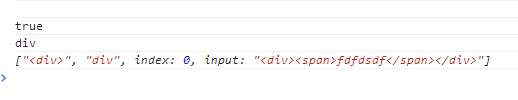
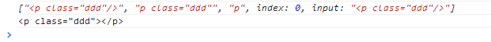
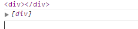

前言
昨天学习了核心$()，有几个遗留问题，我们今天来看看吧
$.each
遍历数组/对象，将每条数据作为callback的上下文，并传入数据以及数据的索引进行处理，
如果其中一条数据的处理结果明确返回false，则停止遍历，并返回elements
1 $.each = function (elements, callback) { 2 var i, key 3 if (likeArray(elements)) { 4 for (i = 0; i < elements.length; i++) { 5 if (callback.call(elements[i], i, elements[i]) === false) 6 return elements; 7 } 8 } else { 9 for (key in elements) { 10 if (callback.call(elements[key], key, elements[key]) === false) 11 return elements; 12 } 13 } 14 return elements 15 }
这个方法本身实现比较简单，我们就不追究了，我们看看里面用到了一个likeArray
1 function likeArray(obj) { 2 return typeof obj.length == 'number' 3 }
这个方法我们就说完了，下面会用到的所以这里就先提出来
zepto.fragment
首先，他的调用时这个样子的：
dom = zepto.fragment(selector.trim(), RegExp.$1, context)
传入html字符串，第二个参数为寻找到的name，第三个是上下文，我们先来看看这个正则
var fragmentRE = /^\s*<(\w+|!)[^>]*>/;
我们来随便写一段代码测试下
1 //HTML代码片断的正则 2 var fragmentRE = /^\s*<(\w+|!)[^>]*>/; 3 var str = '<div><span>fdfdsdf</span></div>'; 4 console.log(RegExp.$1); 5 console.log(fragmentRE.test(str)); 6 console.log(RegExp.$1); 7 console.log(fragmentRE.exec(str));

这段代码的结果如下，RegExp.$1应该是取得最近一次匹配的标签
所以这里传入的参数就是字符串和最外层标签名了，我们继续往下走
然后他这里来了一个html修复，向只写了<div>没结尾的会补全
1 var tagExpanderRE = /<(?!area|br|col|embed|hr|img|input|link|meta|param)(([\w:]+)[^>]*)\/>/ig; 2 var str = '<p class="ddd"/>'; 3 console.log(tagExpanderRE.exec(str)); 4 console.log(str.replace(tagExpanderRE, "<$1></$2>"));

因为下面要用到name，而如果没有传入name参数，name就会被指定相关值，设值方式与上面一致
1 if (name === undefined) name = fragmentRE.test(html) && RegExp.$1
现在设值容器标签名，因为table情况有所不同所以这里单独对table做了处理，其它的容器都是div
1 var table = document.createElement('table'); 2 var tableRow = document.createElement('tr'); 3 var containers = { 4 'tr': document.createElement('tbody'), 5 'tbody': table, 6 'thead': table, 7 'tfoot': table, 8 'td': tableRow, 9 'th': tableRow, 10 '*': document.createElement('div') 11 }; 12 var container.innerHTML = '' + html //将html代码片断放入容器
然后依次取出容器中的dom结构，这里用到了each方法，我们上面已经说明了
这个方法反正就是将dom中的所有children删除了，然后返回
1 var table = document.createElement('table'); 2 var tableRow = document.createElement('tr'); 3 var containers = { 4 'tr': document.createElement('tbody'), 5 'tbody': table, 6 'thead': table, 7 'tfoot': table, 8 'td': tableRow, 9 'th': tableRow, 10 '*': document.createElement('div') 11 }; 12 13 function likeArray(obj) { 14 return typeof obj.length == 'number' 15 } 16 var $ = {}; 17 var slice = [].slice; 18 //slice() 方法可提取字符串的某个部分，并以新的字符串返回被提取的部分。 19 //var str = "Hello happy world!" 20 //document.write(str.slice(6, 11)); //happy 21 22 $.each = function (elements, callback) { 23 var i, key 24 if (likeArray(elements)) { 25 for (i = 0; i < elements.length; i++) { 26 if (callback.call(elements[i], i, elements[i]) === false) 27 return elements; 28 } 29 } else { 30 for (key in elements) { 31 if (callback.call(elements[key], key, elements[key]) === false) 32 return elements; 33 } 34 } 35 return elements 36 } 37 var name = '*', html = '<div><span></spam></div>'; 38 var container = containers[name]; 39 container.innerHTML = html; 40 41 var dom = $.each(slice.call(container.childNodes), function () { 42 container.removeChild(this); 43 }) 44 console.log(container); 45 console.log(dom);

这里只清空container，我们的dom还是在的，并真资格的编程了dom数组了
这里dom其实基本搞完了，完了可以对属性进行设置，其中就用到了zepto属性设置的方法了，我们这里暂时不管他
1 if (isPlainObject(properties)) { 2 nodes = $(dom) //将dom转成zepto对象，为了方便下面调用zepto上的方法 3 //遍历对象，设置属性 4 $.each(properties, function (key, value) { 5 //如果设置的是'val', 'css', 'html', 'text', 'data', 'width', 'height', 'offset'，则调用zepto上相对应的方法 6 if (methodAttributes.indexOf(key) > -1) nodes[key](value) 7 else nodes.attr(key, value) 8 }) 9 }
最后返回了我们创建好的dom数组，所以我们就可以使用zepto.Z将之封装了
这个完了，我们来看看我们的zepto.qsa
zepto.qsa
这个方法用作选择器，这个直接调用的html5 javascript选择元素的方法
1 zepto.qsa = function (element, selector) { 2 var found 3 //当element为document,且selector为ID选择器时 4 return (isDocument(element) && idSelectorRE.test(selector)) ? 5 //直接返回document.getElementById,RegExp.$1为ID的值,当没有找节点时返回[] 6 ((found = element.getElementById(RegExp.$1)) ? [found] : []) : 7 //当element不为元素节点或者document时，返回[] 8 (element.nodeType !== 1 && element.nodeType !== 9) ? [] : 9 //否则将获取到的结果转成数组并返回 10 slice.call( 11 //如果selector是标签名,直接调用getElementsByClassName 12 classSelectorRE.test(selector) ? element.getElementsByClassName(RegExp.$1) : 13 //如果selector是标签名,直接调用getElementsByTagName 14 tagSelectorRE.test(selector) ? element.getElementsByTagName(selector) : 15 //否则调用querySelectorAll 16 element.querySelectorAll(selector)) 17 }
这个方法我最后发现比较简单，就是选择器，我们这里就不管他了
结语
我们今天暂时到这，下次再继续